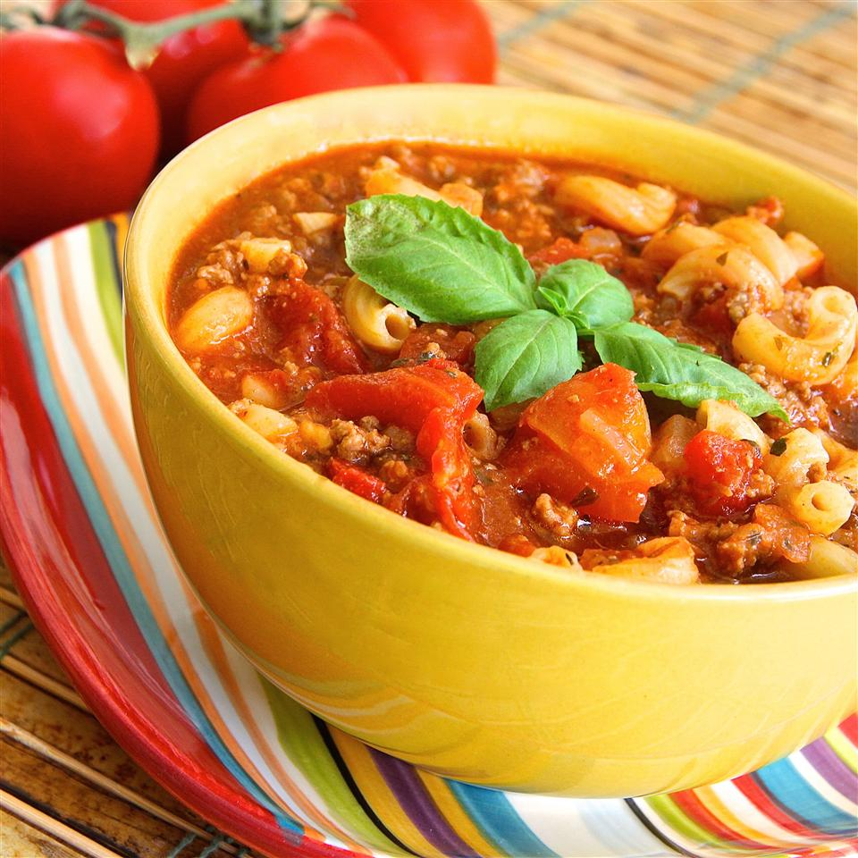

Classic Goulash

Classic Goulash Recipe
This version of classic American beef goulash makes an easy one-pot meal for the whole family. We love it.
Ingredients
- 2 pounds lean ground beef
- 2 large yellow onions, chopped
- 6 cloves garlic, chopped
- 2 (15 ounce) cans tomato sauce
- 2 (14.5 ounce) cans diced tomatoes
- 3 cups water
- ½ cup sofrito sauce (such as Goya®)
- 3 tablespoons Worcestershire sauce
- 2 tablespoons Italian seasoning
- 1 tablespoon seasoned salt, or to taste
- 3 bay leaves
- 2 ½ cups uncooked elbow macaroni
Directions
- Heat a large pot or Dutch oven over medium-high heat. Cook and stir beef in the hot pot until browned and crumbly, about 10 minutes; drain and discard grease. Stir onion and garlic into beef; cook and stir until onion is translucent, about 10 minutes.
- Stir tomato sauce, diced tomatoes, water, sofrito, Worcestershire sauce, Italian seasoning, seasoned salt, and bay leaves into beef mixture. Bring mixture to a boil, reduce heat to low, cover the pot, and simmer, stirring occasionally, until flavors blend, about 20 minutes.
- Pour macaroni into beef mixture, cover the pot, and continue simmering until pasta is tender and flavors are completely blended, about 25 minutes. Discard bay leaves.
Return to main